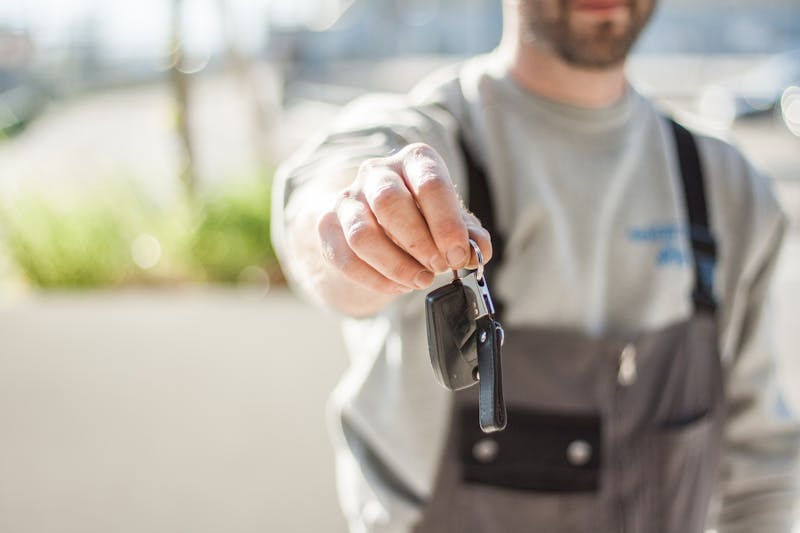

Car Keys & Fob Programming
Lost your keys? Need a spare? We program keys and fobs for all makes.
Car Key Programming in Cedar Rapids
Lost all your car keys? Need a spare fob programmed? Dealerships charge a premium for key services, and locksmiths don't always have the equipment to handle modern vehicles — especially European makes. Cedar Automotive offers professional car key and key fob programming for all makes and models in Cedar Rapids at a fraction of dealership prices.
Modern car keys aren't just metal anymore. They contain transponder chips that must be programmed to your vehicle's immobilizer system before the car will start. Key fobs use encrypted wireless signals for remote lock, unlock, and push-button start. We have the programming equipment to handle it all — from basic transponder key programming to advanced proximity key and push-to-start fob setup.
All-keys-lost situations are our specialty. If you've lost every key to your vehicle, we can create and program a new key from scratch without needing the original. This includes European vehicles like BMW, Audi, Mercedes, and Volvo, where key programming requires manufacturer-level diagnostic access that most shops can't provide.
Key Services We Offer
- All-keys-lost programming (start from zero)
- Key fob programming and replacement
- Transponder key cutting and programming
- Spare key creation and duplication
- Push-to-start / proximity key programming
- Key fob battery replacement
- Immobilizer system diagnostics
- European vehicle key specialists (BMW, Audi, Mercedes, Volvo)
- Remote start fob programming

Why Choose Cedar Automotive for Key Services?
Save vs. Dealership
Key programming at a fraction of what the dealer charges. Same result, significantly lower cost.
All-Keys-Lost Capable
Lost every key? No problem. We can create and program a new key from scratch for most vehicles.
European Key Experts
BMW, Audi, Mercedes, Volvo — we have the manufacturer-level tools for European key programming.
Related Services
Frequently Asked Questions
Can you program a key if I've lost all my keys?
Yes — we handle all-keys-lost situations for most makes and models. This requires reprogramming the vehicle's immobilizer system, which we can do with our professional-grade equipment.
How much does car key programming cost?
Cost varies by vehicle make, model, and whether it's a standard transponder key or a proximity fob. We provide upfront pricing before any work begins. We're typically much less expensive than dealerships.
Do you program European car keys?
Yes — we program keys and fobs for BMW, Audi, Mercedes-Benz, Volvo, and other European makes. These require specialized equipment that most locksmiths don't have.